SWISS-MODEL Homology Modelling Report |
Model Building Report
This document lists the results for the homology modelling project "T451DRAFT_0804" submitted to SWISS-MODEL workspace on July 14, 2017, 9:12 p.m..The submitted primary amino acid sequence is given in Table T1.
If you use any results in your research, please cite the relevant publications:
Marco Biasini; Stefan Bienert; Andrew Waterhouse; Konstantin Arnold; Gabriel Studer; Tobias Schmidt; Florian Kiefer; Tiziano Gallo Cassarino; Martino Bertoni; Lorenza Bordoli; Torsten Schwede. (2014). SWISS-MODEL: modelling protein tertiary and quaternary structure using evolutionary information. Nucleic Acids Research (1 July 2014) 42 (W1): W252-W258; doi: 10.1093/nar/gku340.Arnold, K., Bordoli, L., Kopp, J. and Schwede, T. (2006) The SWISS-MODEL workspace: a web-based environment for protein structure homology modelling. Bioinformatics, 22, 195-201.
Benkert, P., Biasini, M. and Schwede, T. (2011) Toward the estimation of the absolute quality of individual protein structure models. Bioinformatics, 27, 343-350
Results
The SWISS-MODEL template library (SMTL version 2017-07-12, PDB release 2017-07-07) was searched with Blast (Altschul et al., 1997) and HHBlits (Remmert, et al., 2011) for evolutionary related structures matching the target sequence in Table T1. For details on the template search, see Materials and Methods. Overall 346 templates were found (Table T2).
Models
The following models were built (see Materials and Methods "Model Building"):
Model #01 | File | Built with | Oligo-State | Ligands | GMQE | QMEAN |
|---|---|---|---|---|---|---|
| 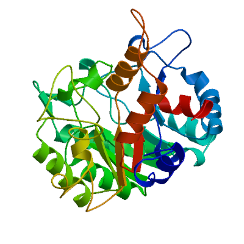 | PDB | ProMod3 Version 1.0.2. | MONOMER (matching prediction) | None | 0.51 | -6.17 |
| 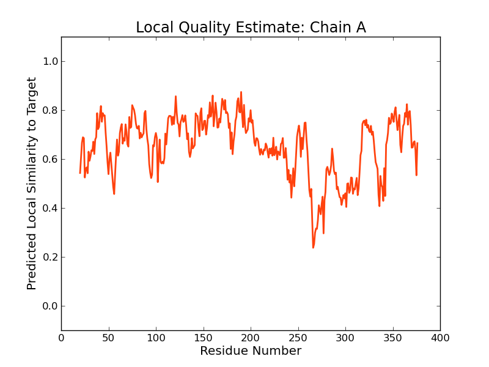 |
| Template | Seq Identity | Oligo-state | Found by | Method | Resolution | Seq Similarity | Range | Coverage | Description |
|---|---|---|---|---|---|---|---|---|---|
| 5mhb.1.A | 22.41 | homo-octamer | HHblits | X-ray | 2.10Å | 0.32 | 20 - 376 | 0.78 | Delta-aminolevulinic acid dehydratase |
| Ligand | Added to Model | Description |
|---|---|---|
| GOL | ✕ - Not biologically relevant. | GLYCEROL |
| GOL | ✕ - Not biologically relevant. | GLYCEROL |
| GOL | ✕ - Not biologically relevant. | GLYCEROL |
| GOL | ✕ - Not biologically relevant. | GLYCEROL |
| GOL | ✕ - Not biologically relevant. | GLYCEROL |
| GOL | ✕ - Not biologically relevant. | GLYCEROL |
| GOL | ✕ - Not biologically relevant. | GLYCEROL |
| GOL | ✕ - Not biologically relevant. | GLYCEROL |
| GOL | ✕ - Not biologically relevant. | GLYCEROL |
| GOL | ✕ - Not biologically relevant. | GLYCEROL |
| GOL | ✕ - Not biologically relevant. | GLYCEROL |
| GOL | ✕ - Not biologically relevant. | GLYCEROL |
| GOL | ✕ - Not biologically relevant. | GLYCEROL |
| GOL | ✕ - Not biologically relevant. | GLYCEROL |
| GOL | ✕ - Not biologically relevant. | GLYCEROL |
| GOL | ✕ - Not biologically relevant. | GLYCEROL |
| GOL | ✕ - Not biologically relevant. | GLYCEROL |
| GOL | ✕ - Not biologically relevant. | GLYCEROL |
| GOL | ✕ - Not biologically relevant. | GLYCEROL |
| GOL | ✕ - Not biologically relevant. | GLYCEROL |
| GOL | ✕ - Not biologically relevant. | GLYCEROL |
| GOL | ✕ - Not biologically relevant. | GLYCEROL |
| GOL | ✕ - Not biologically relevant. | GLYCEROL |
| GOL | ✕ - Not biologically relevant. | GLYCEROL |
| PBG | ✕ - Binding site not conserved. | 3-[5-(AMINOMETHYL)-4-(CARBOXYMETHYL)-1H-PYRROL-3-YL]PROPANOIC ACID |
| PBG | ✕ - Binding site not conserved. | 3-[5-(AMINOMETHYL)-4-(CARBOXYMETHYL)-1H-PYRROL-3-YL]PROPANOIC ACID |
| PBG | ✕ - Binding site not conserved. | 3-[5-(AMINOMETHYL)-4-(CARBOXYMETHYL)-1H-PYRROL-3-YL]PROPANOIC ACID |
| PBG | ✕ - Binding site not conserved. | 3-[5-(AMINOMETHYL)-4-(CARBOXYMETHYL)-1H-PYRROL-3-YL]PROPANOIC ACID |
| PBG | ✕ - Binding site not conserved. | 3-[5-(AMINOMETHYL)-4-(CARBOXYMETHYL)-1H-PYRROL-3-YL]PROPANOIC ACID |
| PBG | ✕ - Binding site not conserved. | 3-[5-(AMINOMETHYL)-4-(CARBOXYMETHYL)-1H-PYRROL-3-YL]PROPANOIC ACID |
| PBG | ✕ - Binding site not conserved. | 3-[5-(AMINOMETHYL)-4-(CARBOXYMETHYL)-1H-PYRROL-3-YL]PROPANOIC ACID |
| PBG | ✕ - Binding site not conserved. | 3-[5-(AMINOMETHYL)-4-(CARBOXYMETHYL)-1H-PYRROL-3-YL]PROPANOIC ACID |
| ZN | ✕ - Binding site not conserved. | ZINC ION |
| ZN | ✕ - Binding site not conserved. | ZINC ION |
| ZN | ✕ - Binding site not conserved. | ZINC ION |
| ZN | ✕ - Binding site not conserved. | ZINC ION |
| ZN | ✕ - Binding site not conserved. | ZINC ION |
| ZN | ✕ - Binding site not conserved. | ZINC ION |
| ZN | ✕ - Binding site not conserved. | ZINC ION |
| ZN | ✕ - Binding site not conserved. | ZINC ION |
| ZN | ✕ - Binding site not conserved. | ZINC ION |
| ZN | ✕ - Binding site not conserved. | ZINC ION |
| ZN | ✕ - Binding site not conserved. | ZINC ION |
| ZN | ✕ - Binding site not conserved. | ZINC ION |
| ZN | ✕ - Binding site not conserved. | ZINC ION |
| ZN | ✕ - Binding site not conserved. | ZINC ION |
| ZN | ✕ - Binding site not conserved. | ZINC ION |
| ZN | ✕ - Binding site not conserved. | ZINC ION |
| ZN | ✕ - Binding site not conserved. | ZINC ION |
| ZN | ✕ - Binding site not conserved. | ZINC ION |
| ZN | ✕ - Binding site not conserved. | ZINC ION |
| ZN | ✕ - Binding site not conserved. | ZINC ION |
| ZN | ✕ - Binding site not conserved. | ZINC ION |
| ZN | ✕ - Binding site not conserved. | ZINC ION |
| ZN | ✕ - Binding site not conserved. | ZINC ION |
| ZN | ✕ - Binding site not conserved. | ZINC ION |
Target MMSLENLLGDDNAASIKRQLDHAPFRRLSEKNETYIKPEWLCQAFHINRLTGEPKLILGDQVGGYYMHSIESIKPSVDKM
5mhb.1.A -------------------RKSPALRAMFE--ETTLSLNDLVLPIFVEEEIDDYK--AVEAMPGVMRIPEKHLAREIERI
Target LNQNIKRVY-LGTDAVIGEEGSYLAKLNDF-ANILVSLRTIVGPDVEIIVDPAGLCLR---KDLRWGVTAEGGDINAQET
5mhb.1.A ANAGIRSVMTFGISHHTDETGSDAWREDGLVARMSRICKQTV-PEMIVMSD---TCFCEYTSHGHCGVLCE-HGVDNDAT
Target LALLAQAAVTFEEAGANALLTIGRSNCEVAAVKQALQSKN-KDMRVLSFSTNSETTSAYFEVTQHDIL-----RSRTGQK
5mhb.1.A LENLGKQAVVAAAAGADFIAPSAAMDGQVQAIRQALDAAGFKDTAIMSYSTK--FASSFYG-PFREAAGSALKGDRKSYQ
Target IFVGNIEEMLVRAICDFGEGSDVIVQKPVESFHLPAILRLLSEGLISFESLMDNSETIDILLNNNPHIRPAFNAGVELLK
5mhb.1.A MNPMNRREAIRESLLDEAQGADCLMVKPAGAY-------------------------LDIV-------REL--------R
Target SKKRILKTGTYEVSGTYSTIQLIINRYSEQLGWSMLDEILLNAASAAG-KSLDIMISRNATWYLEKRGLYSIKES
5mhb.1.A ER-TELPIGAYQVSGEYAMIKFAALA-----GAIDEEKVVLESLGSIKRAGADLIFSYFALDLAEKKI-------
Model #04 | File | Built with | Oligo-State | Ligands | GMQE | QMEAN |
|---|---|---|---|---|---|---|
| 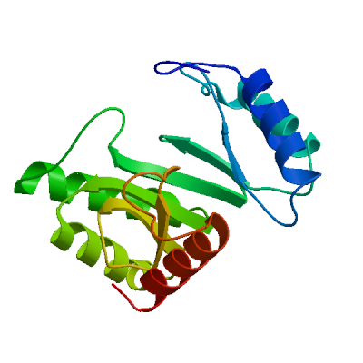 | PDB | ProMod3 Version 1.0.2. | MONOMER (matching prediction) | None | 0.21 | -3.79 |
| 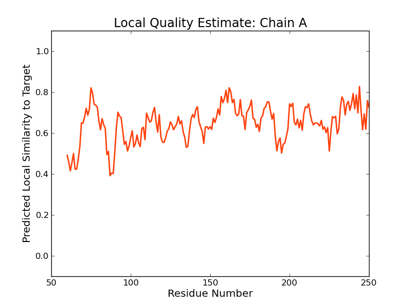 | 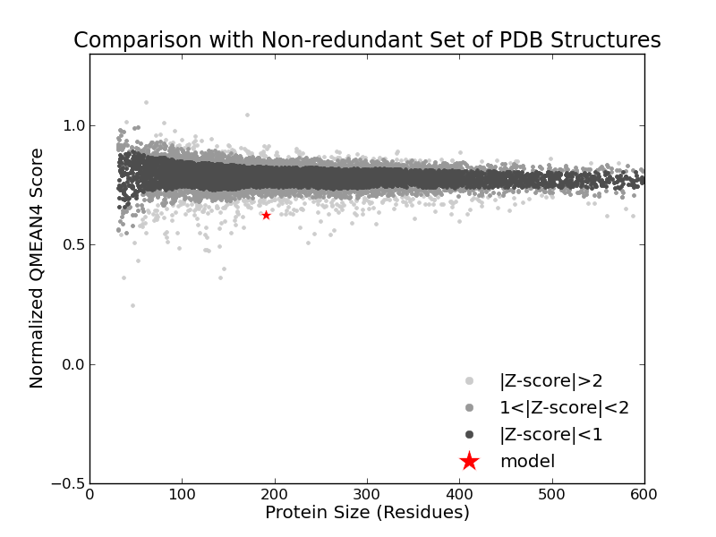 |
| Template | Seq Identity | Oligo-state | Found by | Method | Resolution | Seq Similarity | Range | Coverage | Description |
|---|---|---|---|---|---|---|---|---|---|
| 1m3u.1.A | 16.67 | homo-10-mer | HHblits | X-ray | 1.80Å | 0.27 | 60 - 250 | 0.45 | 3-methyl-2-oxobutanoate hydroxymethyltransferase |
| Ligand | Added to Model | Description |
|---|---|---|
| KPL | ✕ - Binding site not conserved. | KETOPANTOATE |
| KPL | ✕ - Binding site not conserved. | KETOPANTOATE |
| KPL | ✕ - Binding site not conserved. | KETOPANTOATE |
| KPL | ✕ - Binding site not conserved. | KETOPANTOATE |
| KPL | ✕ - Binding site not conserved. | KETOPANTOATE |
| KPL | ✕ - Binding site not conserved. | KETOPANTOATE |
| KPL | ✕ - Binding site not conserved. | KETOPANTOATE |
| KPL | ✕ - Binding site not conserved. | KETOPANTOATE |
| KPL | ✕ - Binding site not conserved. | KETOPANTOATE |
| KPL | ✕ - Binding site not conserved. | KETOPANTOATE |
| MG | ✕ - Binding site not conserved. | MAGNESIUM ION |
| MG | ✕ - Binding site not conserved. | MAGNESIUM ION |
| MG | ✕ - Binding site not conserved. | MAGNESIUM ION |
| MG | ✕ - Binding site not conserved. | MAGNESIUM ION |
| MG | ✕ - Binding site not conserved. | MAGNESIUM ION |
| MG | ✕ - Binding site not conserved. | MAGNESIUM ION |
| MG | ✕ - Binding site not conserved. | MAGNESIUM ION |
| MG | ✕ - Binding site not conserved. | MAGNESIUM ION |
| MG | ✕ - Binding site not conserved. | MAGNESIUM ION |
| MG | ✕ - Binding site not conserved. | MAGNESIUM ION |
Target MMSLENLLGDDNAASIKRQLDHAPFRRLSEKNETYIKPEWLCQAFHINRLTGEPKLILGDQVGGYYMHSIESIKPSVDKM
1m3u.1.A -----------------------------------------------------------QGHDSTLPVTVADIAYHTAAV
Target LNQNIKRVY-LGTDAVIGEEGSYLAKLNDF-ANILVSLRTIVGPDVEIIVDP------------AGLCLRKDLRWGVTAE
1m3u.1.A R-RGAPNCLLL-AD---LPFMAY-ATPEQAFENAATVMRAG--ANMVKIEGGEWLVETVQMLTERAVP--VCGHLGLTPQ
Target -----GGDI---NAQETLALLAQAAVTFEEAGANALLTIGRSNCEVAAVKQALQSKNKDMRVLSFSTNSETTSAYFEVTQ
1m3u.1.A SVNIFGGYKVQGRGDEAGDQLLSDALALEAAGAQLLVLECVPVELAKRITEALA-----IPVIGIGAGN-VTDGQIL-VM
Target HDILRSR--------TGQKIFVGNIEEMLVRAICDFGEGSDVIVQKPVESFHLPAILRLLSEGLISFESLMDNSETIDIL
1m3u.1.A HDAFGITGGHIPKFAKNFLAETGDIRAAVRQYMAEVESGV----------------------------------------
Target LNNNPHIRPAFNAGVELLKSKKRILKTGTYEVSGTYSTIQLIINRYSEQLGWSMLDEILLNAASAAGKSLDIMISRNATW
1m3u.1.A --------------------------------------------------------------------------------
Target YLEKRGLYSIKES
1m3u.1.A -------------
Model #02 | File | Built with | Oligo-State | Ligands | GMQE | QMEAN |
|---|---|---|---|---|---|---|
| 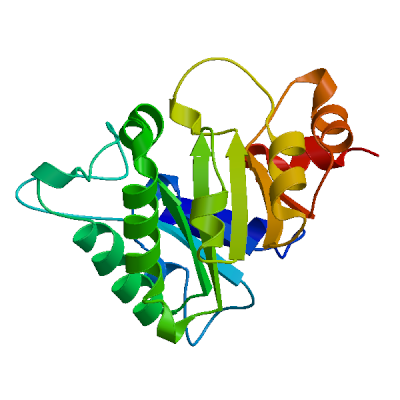 | PDB | ProMod3 Version 1.0.2. | MONOMER (matching prediction) | None | 0.20 | -7.22 |
| 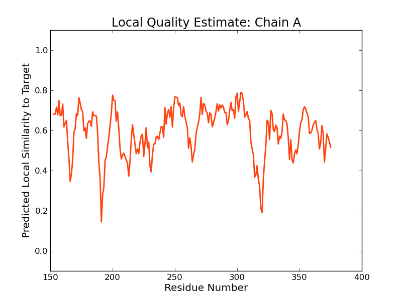 | 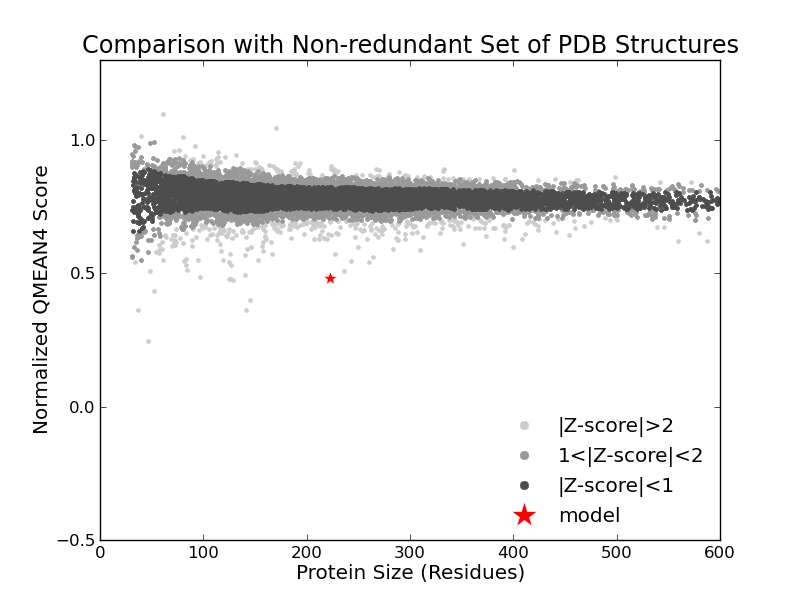 |
| Template | Seq Identity | Oligo-state | Found by | Method | Resolution | Seq Similarity | Range | Coverage | Description |
|---|---|---|---|---|---|---|---|---|---|
| 3ng3.1.A | 16.48 | homo-tetramer | HHblits | X-ray | 2.15Å | 0.27 | 153 - 375 | 0.48 | Deoxyribose-phosphate aldolase |
| Ligand | Added to Model | Description |
|---|---|---|
| CL | ✕ - Not biologically relevant. | CHLORIDE ION |
| EDO | ✕ - Not biologically relevant. | 1,2-ETHANEDIOL |
| EDO | ✕ - Not biologically relevant. | 1,2-ETHANEDIOL |
| EDO | ✕ - Not biologically relevant. | 1,2-ETHANEDIOL |
| EDO | ✕ - Not biologically relevant. | 1,2-ETHANEDIOL |
| UNL | ✕ - Binding site not conserved. | UNKNOWN LIGAND |
| UNL | ✕ - Binding site not conserved. | UNKNOWN LIGAND |
| UNL | ✕ - Binding site not conserved. | UNKNOWN LIGAND |
| UNL | ✕ - Binding site not conserved. | UNKNOWN LIGAND |
Target MMSLENLLGDDNAASIKRQLDHAPFRRLSEKNETYIKPEWLCQAFHINRLTGEPKLILGDQVGGYYMHSIESIKPSVDKM
3ng3.1.A --------------------------------------------------------------------------------
Target LNQNIKRVYLGTDAVIGEEGSYLAKLNDFANILVSLRTIVGPDVEIIVDPAGLCLRKDLRWGVTAEGGDINAQETLALLA
3ng3.1.A ------------------------------------------------------------------------AADVAALV
Target QAAVTFEEAGANALLTIGRSNCEVAAVKQALQSKNKDMRVLSFSTNSETTSAYFEVTQHDILRSRTGQKIFVGNIEEMLV
3ng3.1.A TEA---AELGVYAVC---VSPPMVPAAVQ----AGAGVRVASVA-G---------FPS----GK-HV-------SAVKAH
Target RAICDFGEGSDVIVQKPVESFHLPAILRLLSEGLISFESLMDNSETIDILLNNN------PH------IRPAFNAGVELL
3ng3.1.A EAALAVASGAAEIDMVIDVGAALAGDLDGVRADIAAVRGAVGGA-VLKVIVESSALLALADEHTLVRVCRAAEDAGADFV
Target KSKKRILKTGTYEVSG-T----YSTIQLIINRYSEQ-LGWSMLDEILLNAASAA-GKSLDIMISRNATWYLEKRGLYSIK
3ng3.1.A KTS-TGFHP----SGGASVRAVALMAEAVGGRLGVKASGGIRT----AADALAMLDAGATRLGLSGTRAVLDGLG-----
Target ES
3ng3.1.A --
Model #03 | File | Built with | Oligo-State | Ligands | GMQE | QMEAN |
|---|---|---|---|---|---|---|
| 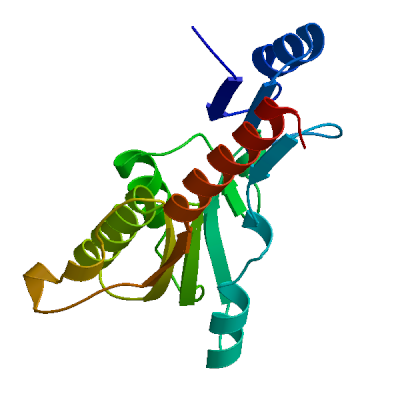 | PDB | ProMod3 Version 1.0.2. | MONOMER (matching prediction) | None | 0.20 | -5.49 |
| 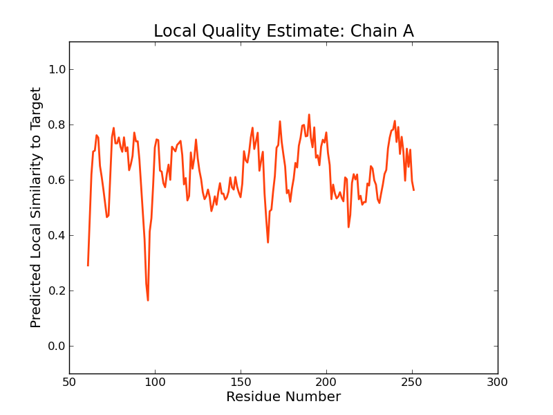 |
| Template | Seq Identity | Oligo-state | Found by | Method | Resolution | Seq Similarity | Range | Coverage | Description |
|---|---|---|---|---|---|---|---|---|---|
| 3bbl.1.A | 14.20 | homo-dimer | HHblits | X-ray | 2.35Å | 0.27 | 61 - 251 | 0.46 | Regulatory protein of LacI family |
| Ligand | Added to Model | Description |
|---|---|---|
| EDO | ✕ - Not biologically relevant. | 1,2-ETHANEDIOL |
| EDO | ✕ - Not biologically relevant. | 1,2-ETHANEDIOL |
| EDO | ✕ - Not biologically relevant. | 1,2-ETHANEDIOL |
| EDO | ✕ - Not biologically relevant. | 1,2-ETHANEDIOL |
| EDO | ✕ - Not biologically relevant. | 1,2-ETHANEDIOL |
| EDO | ✕ - Not biologically relevant. | 1,2-ETHANEDIOL |
| EDO | ✕ - Not biologically relevant. | 1,2-ETHANEDIOL |
| EDO | ✕ - Not biologically relevant. | 1,2-ETHANEDIOL |
Target MMSLENLLGDDNAASIKRQLDHAPFRRLSEKNETYIKPEWLCQAFHINRLTGEPKLILGDQVGGYYMHSIESIKPSVDKM
3bbl.1.A ------------------------------------------------------------NVDGFVLSSINYNDPRVQFL
Target LNQNIKRVYLGTDAVIGEEGSYLAKLNDF-ANILVSLRTIVG-PDVEIIVDPAGLCLR------------KDLRW-G---
3bbl.1.A LKQKFPFVAFGRSNPDWDFAWVDIDGTAGTRQAVEYLIGR-GHRRIAILAWPEDSRVGNDRLQGYLEAMQTAQLPIETGY
Target VTAEGGDINAQETLALLAQAAVT-FEEAGANALLTIGRSNCEVAAVKQALQSKN----KDMRVLSFSTNSETTSAYFEVT
3bbl.1.A ILR--GEGTFEVGRAMTLH-LLDLSPERRPTAIMT--LNDTMAIGAMAAARERGLTIGTDLAIIGFDDA--PMVQYLF-P
Target QHDILRSRTGQKIFVGNIEEMLVRAICDFGEGSDVIVQKPVESFHLPAILRLLSEGLISFESLMDNSETIDILLNNNPHI
3bbl.1.A ------PLSSVRQPIAEAGRKCIELLVAIVEGRE----------------------------------------------
Target RPAFNAGVELLKSKKRILKTGTYEVSGTYSTIQLIINRYSEQLGWSMLDEILLNAASAAGKSLDIMISRNATWYLEKRGL
3bbl.1.A --------------------------------------------------------------------------------
Target YSIKES
3bbl.1.A ------
Model #05 | File | Built with | Oligo-State | Ligands | GMQE | QMEAN |
|---|---|---|---|---|---|---|
| 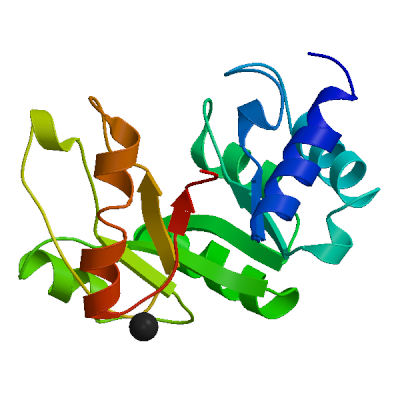 | PDB | ProMod3 Version 1.0.2. | MONOMER (matching prediction) |
1 x CA: CALCIUM ION; | 0.17 | -8.08 |
| 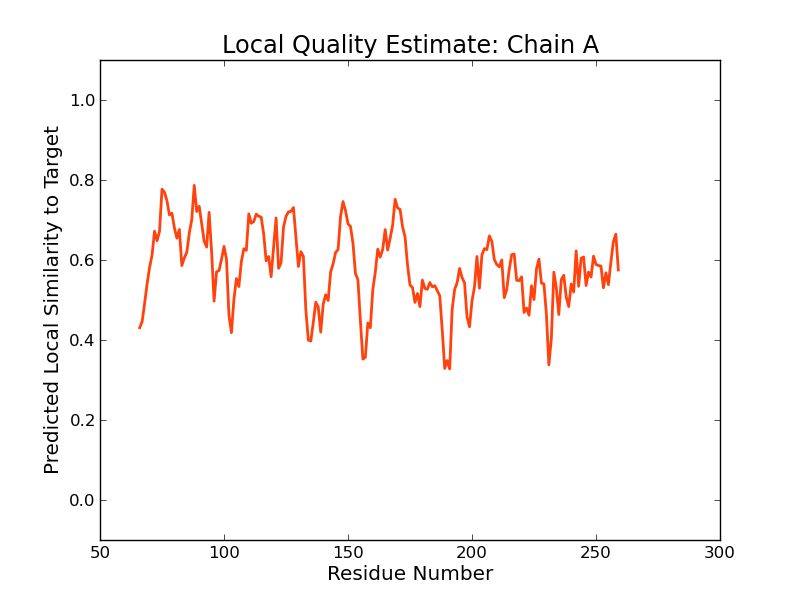 | 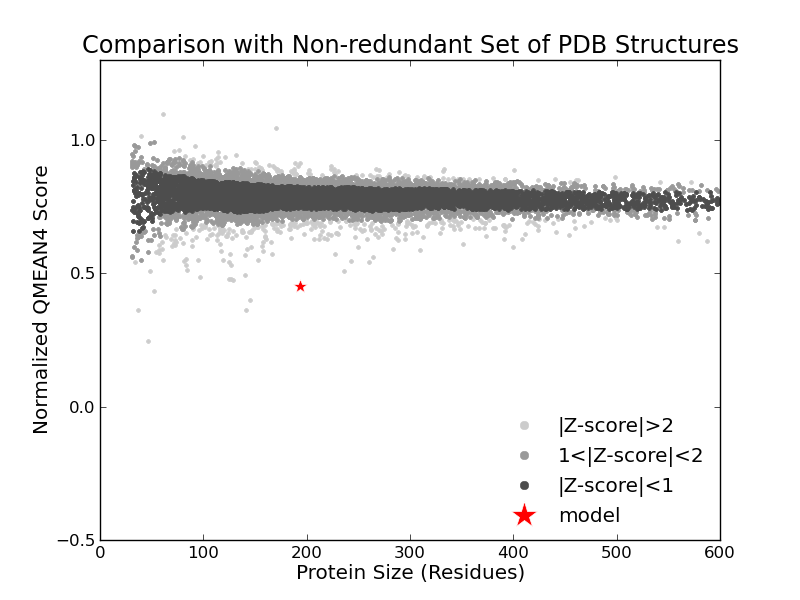 |
| Template | Seq Identity | Oligo-state | Found by | Method | Resolution | Seq Similarity | Range | Coverage | Description |
|---|---|---|---|---|---|---|---|---|---|
| 2ogy.1.A | 9.71 | homo-dimer | HHblits | X-ray | 2.30Å | 0.26 | 66 - 259 | 0.46 | 5-methyltetrahydrofolate corrinoid/iron sulfur protein methyltransferase |
| Ligand | Added to Model | Description | |
|---|---|---|---|
| CA | ✓ | CALCIUM ION | |
| C2F | ✕ - Binding site not conserved. | 5-METHYL-5,6,7,8-TETRAHYDROFOLIC ACID | |
| C2F | ✕ - Binding site not conserved. | 5-METHYL-5,6,7,8-TETRAHYDROFOLIC ACID | |
| CA | ✕ - Binding site not conserved. | CALCIUM ION |
Target MMSLENLLGDDNAASIKRQLDHAPFRRLSEKNETYIKPEWLCQAFHINRLTGEPKLILGDQVGGYYMHSIESIKPSVDKM
2ogy.1.A -----------------------------------------------------------------QERDPAPVQEWARRQ
Target LNQNIKRVYLGTDAVIGEEGSYLAKLNDFANILVSLRTIVGPDVEIIVDPAGLCLRKDLRWGVTAE------GGDINAQE
2ogy.1.A EEGGARALDLNVGP------AVQDKVSAMEWLVEVTQEV--SNLTLCLD---S-----TNIKAIEAGLKKCKNRAMINST
Target TL--ALLAQAAVTFEEAGANALL-TIGR------SNCEVAAVKQ---ALQSKN-K------DMRVLSFSTNSETT-----
2ogy.1.A NAEREKVEKLFPLAVEHGAALIGLTMNKTGIPKDSDTRLAFAMELVAAADEFGLPMEDLYIDPLILPANVAQDHAPEVLK
Target -----SAYF--EVTQHDILR-SRTGQKIFVGNIEEMLVRAICDFGEGSDVIVQKPVESFHLPAILRLLSEGLISFESLMD
2ogy.1.A TLQQIKMLADPAPKT--VLGLSAVSQNCQNRPLINRT-FLAMAMACGLDAAIADACD-----------------------
Target NSETIDILLNNNPHIRPAFNAGVELLKSKKRILKTGTYEVSGTYSTIQLIINRYSEQLGWSMLDEILLNAASAAGKSLDI
2ogy.1.A --------------------------------------------------------------------------------
Target MISRNATWYLEKRGLYSIKES
2ogy.1.A ---------------------
Materials and Methods
Template Search
Template search with Blast and HHBlits has been performed against the SWISS-MODEL template library (SMTL, last update: 2017-07-12, last included PDB release: 2017-07-07).
The target sequence was searched with BLAST (Altschul et al., 1997) against the primary amino acid sequence contained in the SMTL.
An initial HHblits profile has been built using the procedure outlined in (Remmert, et al., 2011), followed by 1 iteration of HHblits against NR20. The obtained profile has then be searched against all profiles of the SMTL. A total of 348 templates were found.
Template Selection
For each identified template, the template's quality has been predicted from features of the target-template alignment. The templates with the highest quality have then been selected for model building.
Model Building
Models are built based on the target-template alignment using ProMod3. Coordinates which are conserved between the target and the template are copied from the template to the model. Insertions and deletions are remodelled using a fragment library. Side chains are then rebuilt. Finally, the geometry of the resulting model is regularized by using a force field. In case loop modelling with ProMod3 fails, an alternative model is built with PROMOD-II (Guex, et al., 1997).
Model Quality Estimation
The global and per-residue model quality has been assessed using the QMEAN scoring function (Benkert, et al., 2011) . For improved performance, weights of the individual QMEAN terms have been trained specifically for SWISS-MODEL.
Ligand Modelling
Ligands present in the template structure are transferred by homology to the model when the following criteria are met (Gallo -Casserino, to be published): (a) The ligands are annotated as biologically relevant in the template library, (b) the ligand is in contact with the model, (c) the ligand is not clashing with the protein, (d) the residues in contact with the ligand are conserved between the target and the template. If any of these four criteria is not satisfied, a certain ligand will not be included in the model. The model summary includes information on why and which ligand has not been included.
Oligomeric State Conservation
Homo-oligomeric structure of the target protein is predicted based on the analysis of pairwise interfaces of the identified template structures. For each relevant interface between polypeptide chains (interfaces with more than 10 residue-residue interactions), the QscoreOligomer (Mariani et al., 2011) is predicted from features such as similarity to target and frequency of observing this interface in the identified templates (Kiefer, Bertoni, Biasini, to be published). The prediction is performed with a random forest regressor using these features as input parameters to predict the probability of conservation for each interface. The QscoreOligomer of the whole complex is then calculated as the weight-averaged QscoreOligomer of the interfaces. The oligomeric state of the target is predicted to be the same as in the template when QscoreOligomer is predicted to be higher or equal to 0.5.
References
Altschul, S.F., Madden, T.L., Schaffer, A.A., Zhang, J., Zhang, Z., Miller, W. and Lipman, D.J. (1997) Gapped BLAST and PSI-BLAST: a new generation of protein database search programs. Nucleic Acids Res, 25, 3389-3402.
Remmert, M., Biegert, A., Hauser, A. and Soding, J. (2012) HHblits: lightning-fast iterative protein sequence searching by HMM-HMM alignment. Nat Methods, 9, 173-175.
Guex, N. and Peitsch, M.C. (1997) SWISS-MODEL and the Swiss-PdbViewer: an environment for comparative protein modeling. Electrophoresis, 18, 2714-2723.
Sali, A. and Blundell, T.L. (1993) Comparative protein modelling by satisfaction of spatial restraints. J Mol Biol, 234, 779-815.
Benkert, P., Biasini, M. and Schwede, T. (2011) Toward the estimation of the absolute quality of individual protein structure models. Bioinformatics, 27, 343-350.
Mariani, V., Kiefer, F., Schmidt, T., Haas, J. and Schwede, T. (2011) Assessment of template based protein structure predictions in CASP9. Proteins, 79 Suppl 10, 37-58.
Table T1:
Primary amino acid sequence for which templates were searched and models were built.
SYLAKLNDFANILVSLRTIVGPDVEIIVDPAGLCLRKDLRWGVTAEGGDINAQETLALLAQAAVTFEEAGANALLTIGRSNCEVAAVKQALQSKNKDMRV
LSFSTNSETTSAYFEVTQHDILRSRTGQKIFVGNIEEMLVRAICDFGEGSDVIVQKPVESFHLPAILRLLSEGLISFESLMDNSETIDILLNNNPHIRPA
FNAGVELLKSKKRILKTGTYEVSGTYSTIQLIINRYSEQLGWSMLDEILLNAASAAGKSLDIMISRNATWYLEKRGLYSIKES
Table T2:
| Template | Seq Identity | Oligo-state | Found by | Method | Resolution | Seq Similarity | Coverage | Description |
|---|---|---|---|---|---|---|---|---|
| 1e51.1.A | 21.17 | homo-octamer | HHblits | X-ray | 2.83Å | 0.31 | 0.80 | DELTA-AMINOLEVULINIC ACID DEHYDRATASE |
| 5hnr.1.H | 21.17 | homo-octamer | HHblits | X-ray | 2.83Å | 0.31 | 0.80 | Delta-aminolevulinic acid dehydratase |
| 5hms.1.F | 21.17 | homo-octamer | HHblits | X-ray | 2.80Å | 0.31 | 0.80 | Delta-aminolevulinic acid dehydratase |
| 1pv8.1.A | 21.17 | homo-hexamer | HHblits | X-ray | 2.20Å | 0.31 | 0.80 | Delta-aminolevulinic acid dehydratase |
| 1b4e.1.A | 22.67 | homo-octamer | HHblits | X-ray | 2.00Å | 0.32 | 0.78 | PROTEIN (5-AMINOLEVULINIC ACID DEHYDRATASE) |
| 2z1b.1.A | 20.26 | homo-dimer | HHblits | X-ray | 3.30Å | 0.30 | 0.80 | Delta-aminolevulinic acid dehydratase |
| 2z1b.2.A | 20.26 | homo-dimer | HHblits | X-ray | 3.30Å | 0.30 | 0.80 | Delta-aminolevulinic acid dehydratase |
| 2z1b.2.B | 20.26 | homo-dimer | HHblits | X-ray | 3.30Å | 0.30 | 0.80 | Delta-aminolevulinic acid dehydratase |
| 2z1b.3.A | 20.26 | homo-dimer | HHblits | X-ray | 3.30Å | 0.30 | 0.80 | Delta-aminolevulinic acid dehydratase |
| 1w1z.1.A | 21.67 | homo-octamer | HHblits | X-ray | 2.60Å | 0.32 | 0.78 | DELTA-AMINOLEVULINIC ACID DEHYDRATASE |
| 5mhb.1.A | 22.41 | homo-octamer | HHblits | X-ray | 2.10Å | 0.32 | 0.78 | Delta-aminolevulinic acid dehydratase |
| 1l6y.1.A | 22.41 | homo-octamer | HHblits | X-ray | 1.90Å | 0.32 | 0.78 | PORPHOBILINOGEN SYNTHASE |
| 1h7n.1.A | 19.54 | homo-octamer | HHblits | X-ray | 1.60Å | 0.30 | 0.80 | 5-AMINOLAEVULINIC ACID DEHYDRATASE |
| 1qnv.1.A | 19.54 | homo-octamer | HHblits | X-ray | 2.50Å | 0.30 | 0.80 | 5-AMINOLAEVULINIC ACID DEHYDRATASE |
| 1h7r.1.A | 19.54 | homo-octamer | HHblits | X-ray | 2.00Å | 0.30 | 0.80 | 5-AMINOLAEVULINIC ACID DEHYDRATASE |
| 1h7o.1.A | 19.54 | homo-octamer | HHblits | X-ray | 1.75Å | 0.30 | 0.80 | 5-AMINOLAEVULINIC ACID DEHYDRATASE |
| 1ylv.1.A | 19.54 | homo-octamer | HHblits | X-ray | 2.15Å | 0.30 | 0.80 | PROTEIN (5-AMINOLAEVULINIC ACID DEHYDRATASE) |
| 3obk.1.A | 20.86 | homo-octamer | HHblits | X-ray | 2.50Å | 0.31 | 0.79 | Delta-aminolevulinic acid dehydratase |
| 1gjp.1.A | 19.61 | homo-octamer | HHblits | X-ray | 1.80Å | 0.30 | 0.80 | 5-AMINOLAEVULINIC ACID DEHYDRATASE |
| 1aw5.1.A | 19.61 | homo-octamer | HHblits | X-ray | 2.30Å | 0.29 | 0.80 | 5-AMINOLEVULINATE DEHYDRATASE |
| 1w5q.1.A | 21.48 | homo-octamer | HHblits | X-ray | 1.40Å | 0.31 | 0.78 | DELTA-AMINOLEVULINIC ACID DEHYDRATASE |
| 1w5m.1.A | 21.14 | homo-octamer | HHblits | X-ray | 1.60Å | 0.31 | 0.78 | DELTA-AMINOLEVULINIC ACID DEHYDRATASE |
| 1w5o.1.A | 21.14 | homo-octamer | HHblits | X-ray | 1.85Å | 0.31 | 0.78 | DELTA-AMINOLEVULINIC ACID DEHYDRATASE |
| 1w5p.1.A | 21.14 | homo-octamer | HHblits | X-ray | 1.55Å | 0.31 | 0.78 | DELTA-AMINOLEVULINIC ACID DEHYDRATASE |
| 1w56.1.A | 21.14 | homo-octamer | HHblits | X-ray | 1.70Å | 0.31 | 0.78 | DELTA-AMINOLEVULINIC ACID DEHYDRATASE |
| 1w54.1.A | 20.81 | homo-octamer | HHblits | X-ray | 2.20Å | 0.31 | 0.78 | DELTA-AMINOLEVULINIC ACID DEHYDRATASE |
| 1w5n.1.A | 20.81 | homo-octamer | HHblits | X-ray | 1.65Å | 0.31 | 0.78 | DELTA-AMINOLEVULINIC ACID DEHYDRATASE |
| 5lzl.1.B | 21.07 | homo-octamer | HHblits | X-ray | 3.47Å | 0.31 | 0.78 | Delta-aminolevulinic acid dehydratase |
| 5lzl.1.A | 21.07 | homo-octamer | HHblits | X-ray | 3.47Å | 0.31 | 0.78 | Delta-aminolevulinic acid dehydratase |
| 5lzl.1.E | 21.07 | homo-octamer | HHblits | X-ray | 3.47Å | 0.31 | 0.78 | Delta-aminolevulinic acid dehydratase |
| 5lzl.1.H | 21.07 | homo-octamer | HHblits | X-ray | 3.47Å | 0.31 | 0.78 | Delta-aminolevulinic acid dehydratase |
| 5lzl.2.D | 21.07 | homo-octamer | HHblits | X-ray | 3.47Å | 0.31 | 0.78 | Delta-aminolevulinic acid dehydratase |
| 1gzg.1.A | 20.81 | homo-octamer | HHblits | X-ray | 1.66Å | 0.31 | 0.78 | DELTA-AMINOLEVULINIC ACID DEHYDRATASE |
| 2c19.1.A | 20.81 | homo-octamer | HHblits | X-ray | 2.05Å | 0.31 | 0.78 | DELTA-AMINOLEVULINIC ACID DEHYDRATASE |
| 2woq.1.A | 20.47 | homo-octamer | HHblits | X-ray | 1.75Å | 0.31 | 0.78 | DELTA-AMINOLEVULINIC ACID DEHYDRATASE |
| 1b4k.1.B | 20.47 | homo-octamer | HHblits | X-ray | 1.67Å | 0.31 | 0.78 | PROTEIN (5-AMINOLEVULINIC ACID DEHYDRATASE) |
| 1b4k.1.A | 20.47 | homo-octamer | HHblits | X-ray | 1.67Å | 0.31 | 0.78 | PROTEIN (5-AMINOLEVULINIC ACID DEHYDRATASE) |
| 2c16.1.A | 20.81 | homo-octamer | HHblits | X-ray | 2.02Å | 0.31 | 0.78 | DELTA-AMINOLEVULINIC ACID DEHYDRATASE |
| 2c15.1.A | 20.47 | homo-octamer | HHblits | X-ray | 1.48Å | 0.31 | 0.78 | DELTA-AMINOLEVULINIC ACID DEHYDRATASE |
| 2c13.1.A | 20.47 | homo-octamer | HHblits | X-ray | 2.15Å | 0.31 | 0.78 | DELTA-AMINOLEVULINIC ACID DEHYDRATASE |
| 3qfe.1.A | 10.16 | monomer | HHblits | X-ray | 2.35Å | 0.26 | 0.49 | Putative dihydrodipicolinate synthase family protein |
| 3ng3.1.A | 16.48 | homo-tetramer | HHblits | X-ray | 2.15Å | 0.27 | 0.48 | Deoxyribose-phosphate aldolase |
| 3ez4.1.A | 18.64 | homo-10-mer | HHblits | X-ray | 2.10Å | 0.28 | 0.46 | 3-methyl-2-oxobutanoate hydroxymethyltransferase |
| 3vav.1.A | 18.08 | homo-10-mer | HHblits | X-ray | 1.80Å | 0.28 | 0.46 | 3-methyl-2-oxobutanoate hydroxymethyltransferase |
| 3bbl.1.A | 14.20 | homo-dimer | HHblits | X-ray | 2.35Å | 0.27 | 0.46 | Regulatory protein of LacI family |
| 3egc.1.A | 19.54 | homo-dimer | HHblits | X-ray | 2.35Å | 0.28 | 0.45 | putative ribose operon repressor |
| 3cs3.1.A | 11.73 | homo-dimer | HHblits | X-ray | 2.40Å | 0.26 | 0.47 | Sugar-binding transcriptional regulator, LacI family |
| 1m3u.1.A | 16.67 | homo-10-mer | HHblits | X-ray | 1.80Å | 0.27 | 0.45 | 3-methyl-2-oxobutanoate hydroxymethyltransferase |
| 3qk7.1.A | 12.50 | homo-dimer | HHblits | X-ray | 2.70Å | 0.26 | 0.46 | Transcriptional regulators |
| 3qk7.2.A | 12.50 | homo-dimer | HHblits | X-ray | 2.70Å | 0.26 | 0.46 | Transcriptional regulators |
| 3qk7.2.B | 12.50 | homo-dimer | HHblits | X-ray | 2.70Å | 0.26 | 0.46 | Transcriptional regulators |
| 2yci.1.A | 8.94 | homo-dimer | HHblits | X-ray | 1.78Å | 0.25 | 0.47 | 5-METHYLTETRAHYDROFOLATE CORRINOID/IRON SULFUR PROTEIN METHYLTRANSFERASE |
| 2rgy.1.A | 14.94 | homo-dimer | HHblits | X-ray | 2.05Å | 0.27 | 0.45 | Transcriptional regulator, LacI family |
| 4dpp.1.A | 11.80 | homo-tetramer | HHblits | X-ray | 2.00Å | 0.25 | 0.46 | Dihydrodipicolinate synthase 2, chloroplastic |
| 1oy0.1.A | 14.77 | homo-10-mer | HHblits | X-ray | 2.80Å | 0.26 | 0.46 | Ketopantoate hydroxymethyltransferase |
| 1o66.1.A | 12.64 | homo-pentamer | HHblits | X-ray | 1.75Å | 0.26 | 0.45 | 3-methyl-2-oxobutanoate hydroxymethyltransferase |
| 2ogy.1.A | 9.71 | homo-dimer | HHblits | X-ray | 2.30Å | 0.26 | 0.46 | 5-methyltetrahydrofolate corrinoid/iron sulfur protein methyltransferase |
| 3vav.1.A | 18.24 | homo-10-mer | HHblits | X-ray | 1.80Å | 0.28 | 0.44 | 3-methyl-2-oxobutanoate hydroxymethyltransferase |
| 4dje.1.A | 9.14 | hetero-oligomer | HHblits | X-ray | 3.50Å | 0.25 | 0.46 | 5-methyltetrahydrofolate corrinoid/iron sulfur protein methyltransferase |
| 4djd.1.B | 9.14 | hetero-oligomer | HHblits | X-ray | 2.38Å | 0.25 | 0.46 | 5-methyltetrahydrofolate corrinoid/iron sulfur protein methyltransferase |
| 2yck.1.A | 9.09 | homo-dimer | HHblits | X-ray | 2.15Å | 0.25 | 0.46 | 5-METHYLTETRAHYDROFOLATE CORRINOID/IRON SULFUR PROTEIN METHYLTRANSFERASE |
| 1oy0.1.A | 15.98 | homo-10-mer | HHblits | X-ray | 2.80Å | 0.28 | 0.44 | Ketopantoate hydroxymethyltransferase |
| 1m3u.1.A | 17.37 | homo-10-mer | HHblits | X-ray | 1.80Å | 0.28 | 0.44 | 3-methyl-2-oxobutanoate hydroxymethyltransferase |
| 1o66.1.A | 16.77 | homo-pentamer | HHblits | X-ray | 1.75Å | 0.28 | 0.44 | 3-methyl-2-oxobutanoate hydroxymethyltransferase |
| 1lt7.1.A | 11.83 | homo-tetramer | HHblits | X-ray | 2.15Å | 0.27 | 0.44 | BETAINE-HOMOCYSTEINE METHYLTRANSFERASE |
| 1lt7.1.B | 11.83 | homo-tetramer | HHblits | X-ray | 2.15Å | 0.27 | 0.44 | BETAINE-HOMOCYSTEINE METHYLTRANSFERASE |
| 1lt8.1.A | 11.83 | homo-tetramer | HHblits | X-ray | 2.05Å | 0.27 | 0.44 | BETAINE-HOMOCYSTEINE METHYLTRANSFERASE |
| 1lt8.1.B | 11.83 | homo-tetramer | HHblits | X-ray | 2.05Å | 0.27 | 0.44 | BETAINE-HOMOCYSTEINE METHYLTRANSFERASE |
| 4m3p.1.A | 11.83 | homo-tetramer | HHblits | X-ray | 1.89Å | 0.26 | 0.44 | Betaine--homocysteine S-methyltransferase 1 |
| 4m3p.1.D | 11.83 | homo-tetramer | HHblits | X-ray | 1.89Å | 0.26 | 0.44 | Betaine--homocysteine S-methyltransferase 1 |
| 3ez4.1.A | 17.37 | homo-10-mer | HHblits | X-ray | 2.10Å | 0.27 | 0.44 | 3-methyl-2-oxobutanoate hydroxymethyltransferase |
| 3bol.1.A | 13.41 | homo-dimer | HHblits | X-ray | 1.85Å | 0.27 | 0.43 | 5-methyltetrahydrofolate S-homocysteine methyltransferase |
| 1q7m.2.A | 13.41 | monomer | HHblits | X-ray | 2.10Å | 0.27 | 0.43 | 5-methyltetrahydrofolate S-homocysteine methyltransferase |
| 1q7q.1.A | 13.41 | monomer | HHblits | X-ray | 3.10Å | 0.27 | 0.43 | 5-methyltetrahydrofolate S-homocysteine methyltransferase |
| 1q8a.2.A | 13.41 | monomer | HHblits | X-ray | 1.70Å | 0.27 | 0.43 | 5-methyltetrahydrofolate S-homocysteine methyltransferase |
| 4mg4.1.A | 15.29 | homo-dimer | HHblits | X-ray | 1.70Å | 0.27 | 0.41 | Phosphonomutase |
| 4mg4.2.B | 15.29 | homo-dimer | HHblits | X-ray | 1.70Å | 0.27 | 0.41 | Phosphonomutase |
| 1xg3.1.A | 16.00 | homo-tetramer | HHblits | X-ray | 1.90Å | 0.29 | 0.39 | Probable methylisocitrate lyase |
| 1xg3.1.C | 16.00 | homo-tetramer | HHblits | X-ray | 1.90Å | 0.29 | 0.39 | Probable methylisocitrate lyase |
| 1mum.1.A | 16.11 | homo-tetramer | HHblits | X-ray | 1.90Å | 0.29 | 0.39 | 2-methylisocitrate lyase |
| 1m1b.1.A | 16.67 | homo-tetramer | HHblits | X-ray | 2.25Å | 0.28 | 0.39 | PHOSPHOENOLPYRUVATE PHOSPHOMUTASE |
| 1s2v.1.A | 16.67 | homo-tetramer | HHblits | X-ray | 2.10Å | 0.28 | 0.39 | Phosphoenolpyruvate phosphomutase |
| 1s2w.1.A | 16.67 | monomer | HHblits | X-ray | 1.69Å | 0.28 | 0.39 | Phosphoenolpyruvate phosphomutase |
| 2hjp.1.A | 11.92 | homo-tetramer | HHblits | X-ray | 1.90Å | 0.28 | 0.39 | Phosphonopyruvate hydrolase |
| 4e4u.1.A | 9.68 | homo-octamer | HHblits | X-ray | 1.35Å | 0.26 | 0.40 | Mandalate racemase/muconate lactonizing enzyme |
| 1s2u.1.A | 16.00 | homo-tetramer | HHblits | X-ray | 2.00Å | 0.28 | 0.39 | Phosphoenolpyruvate phosphomutase |
| 1xis.1.A | 16.56 | homo-tetramer | HHblits | X-ray | 1.60Å | 0.26 | 0.39 | XYLOSE ISOMERASE |
| 5unc.1.A | 13.70 | homo-tetramer | HHblits | X-ray | 1.71Å | 0.28 | 0.38 | PHOSPHOENOLPYRUVATE PHOSPHOMUTASE |
| 1yey.1.A | 14.19 | monomer | HHblits | X-ray | 2.34Å | 0.27 | 0.39 | L-fuconate dehydratase |
| 5avh.1.A | 16.89 | monomer | HHblits | X-ray | 0.90Å | 0.26 | 0.39 | Xylose isomerase |
| 2hxt.1.A | 14.29 | homo-dimer | HHblits | X-ray | 1.70Å | 0.27 | 0.38 | L-fuconate dehydratase |
| 2hzg.1.A | 14.97 | homo-dimer | HHblits | X-ray | 2.02Å | 0.26 | 0.38 | Mandelate racemase/muconate lactonizing enzyme/Enolase superfamily |
| 2hzg.1.B | 14.97 | homo-dimer | HHblits | X-ray | 2.02Å | 0.26 | 0.38 | Mandelate racemase/muconate lactonizing enzyme/Enolase superfamily |
| 4a35.1.A | 13.89 | homo-dimer | HHblits | X-ray | 1.74Å | 0.26 | 0.38 | MITOCHONDRIAL ENOLASE SUPERFAMILY MEMBER 1 |
| 1ujq.1.A | 17.65 | homo-tetramer | HHblits | X-ray | 2.10Å | 0.30 | 0.36 | Probable methylisocitrate lyase |
| 1ujq.1.C | 17.65 | homo-tetramer | HHblits | X-ray | 2.10Å | 0.30 | 0.36 | Probable methylisocitrate lyase |
| 2qgq.1.A | 16.67 | monomer | HHblits | X-ray | 2.00Å | 0.28 | 0.36 | Protein TM_1862 |
| 2ze3.1.A | 9.79 | homo-dimer | HHblits | X-ray | 1.65Å | 0.25 | 0.37 | DFA0005 |
| 2qiw.1.A | 15.11 | homo-dimer | HHblits | X-ray | 1.80Å | 0.27 | 0.36 | PEP phosphonomutase |
| 4j3z.1.A | 14.71 | homo-octamer | HHblits | X-ray | 2.50Å | 0.26 | 0.36 | Mandelate racemase/muconate lactonizing enzyme |
| 4f4r.1.A | 10.45 | homo-octamer | HHblits | X-ray | 1.80Å | 0.26 | 0.35 | D-mannonate dehydratase |
| 3h8a.1.A | 17.60 | hetero-oligomer | HHblits | X-ray | 1.90Å | 0.30 | 0.33 | Enolase |
| 3h8a.2.B | 17.60 | hetero-oligomer | HHblits | X-ray | 1.90Å | 0.30 | 0.33 | Enolase |
| 5d88.1.A | 14.84 | homo-dimer | HHblits | X-ray | 1.66Å | 0.28 | 0.33 | Predicted protease of the collagenase family |
| 4yws.1.A | 14.40 | homo-dimer | HHblits | X-ray | 2.45Å | 0.28 | 0.33 | Enolase |
| 4yws.1.B | 14.40 | homo-dimer | HHblits | X-ray | 2.45Å | 0.28 | 0.33 | Enolase |
| 4z17.1.A | 14.40 | homo-dimer | HHblits | X-ray | 2.65Å | 0.28 | 0.33 | Enolase |
| 4z17.1.B | 14.40 | homo-dimer | HHblits | X-ray | 2.65Å | 0.28 | 0.33 | Enolase |
| 4z1y.1.B | 14.40 | homo-dimer | HHblits | X-ray | 2.53Å | 0.28 | 0.33 | Enolase |
| 3iwp.1.B | 17.80 | homo-tetramer | HHblits | X-ray | 2.50Å | 0.29 | 0.31 | Copper homeostasis protein cutC homolog |
| 3iwp.1.A | 17.80 | homo-tetramer | HHblits | X-ray | 2.50Å | 0.29 | 0.31 | Copper homeostasis protein cutC homolog |
| 3iwp.2.B | 17.80 | homo-tetramer | HHblits | X-ray | 2.50Å | 0.29 | 0.31 | Copper homeostasis protein cutC homolog |
| 3iwp.2.C | 17.80 | homo-tetramer | HHblits | X-ray | 2.50Å | 0.29 | 0.31 | Copper homeostasis protein cutC homolog |
| 3iwp.2.D | 17.80 | homo-tetramer | HHblits | X-ray | 2.50Å | 0.29 | 0.31 | Copper homeostasis protein cutC homolog |
| 3iwp.3.A | 17.80 | homo-tetramer | HHblits | X-ray | 2.50Å | 0.29 | 0.31 | Copper homeostasis protein cutC homolog |
| 3iwp.3.B | 17.80 | homo-tetramer | HHblits | X-ray | 2.50Å | 0.29 | 0.31 | Copper homeostasis protein cutC homolog |
| 3iwp.3.C | 17.80 | homo-tetramer | HHblits | X-ray | 2.50Å | 0.29 | 0.31 | Copper homeostasis protein cutC homolog |
| 3iwp.3.D | 17.80 | homo-tetramer | HHblits | X-ray | 2.50Å | 0.29 | 0.31 | Copper homeostasis protein cutC homolog |
| 1vs1.1.A | 10.66 | homo-tetramer | HHblits | X-ray | 2.30Å | 0.25 | 0.32 | 3-deoxy-7-phosphoheptulonate synthase |
| 1vs1.1.D | 10.66 | homo-tetramer | HHblits | X-ray | 2.30Å | 0.25 | 0.32 | 3-deoxy-7-phosphoheptulonate synthase |
| 3apy.1.A | 14.29 | homo-dimer | HHblits | X-ray | 2.80Å | 0.27 | 0.31 | Methylenetetrahydrofolate reductase |
| 3apy.1.B | 14.29 | homo-dimer | HHblits | X-ray | 2.80Å | 0.27 | 0.31 | Methylenetetrahydrofolate reductase |
| 3apt.1.A | 14.29 | homo-dimer | HHblits | X-ray | 1.85Å | 0.27 | 0.31 | Methylenetetrahydrofolate reductase |
| 3apt.1.B | 14.29 | homo-dimer | HHblits | X-ray | 1.85Å | 0.27 | 0.31 | Methylenetetrahydrofolate reductase |
| 1x7i.1.A | 13.56 | homo-dimer | HHblits | X-ray | 1.70Å | 0.27 | 0.31 | Copper homeostasis protein cutC |
| 1x7i.1.B | 13.56 | homo-dimer | HHblits | X-ray | 1.70Å | 0.27 | 0.31 | Copper homeostasis protein cutC |
| 1twd.1.A | 13.56 | homo-dimer | HHblits | X-ray | 1.70Å | 0.27 | 0.31 | Copper homeostasis protein cutC |
| 1twd.1.B | 13.56 | homo-dimer | HHblits | X-ray | 1.70Å | 0.27 | 0.31 | Copper homeostasis protein cutC |
| 3qfe.1.A | 19.64 | monomer | HHblits | X-ray | 2.35Å | 0.30 | 0.29 | Putative dihydrodipicolinate synthase family protein |
| 4c1n.1.B | 11.02 | hetero-oligomer | HHblits | X-ray | 2.53Å | 0.25 | 0.31 | CO DEHYDROGENASE/ACETYL-COA SYNTHASE, IRON-SULFUR PROTEIN |
| 2ycl.1.B | 10.17 | hetero-oligomer | HHblits | X-ray | 1.95Å | 0.25 | 0.31 | CO DEHYDROGENASE/ACETYL-COA SYNTHASE, IRON-SULFUR PROTEIN |
| 3ng3.1.A | 19.47 | homo-tetramer | HHblits | X-ray | 2.15Å | 0.28 | 0.30 | Deoxyribose-phosphate aldolase |
| 1v93.1.A | 13.79 | monomer | HHblits | X-ray | 1.90Å | 0.26 | 0.30 | 5,10-Methylenetetrahydrofolate reductase |
| 2hjp.1.A | 14.04 | homo-tetramer | HHblits | X-ray | 1.90Å | 0.27 | 0.30 | Phosphonopyruvate hydrolase |
| 5kmy.1.A | 18.02 | monomer | HHblits | X-ray | 1.91Å | 0.29 | 0.29 | Tryptophan synthase alpha chain |
| 4dpp.1.A | 15.45 | homo-tetramer | HHblits | X-ray | 2.00Å | 0.28 | 0.29 | Dihydrodipicolinate synthase 2, chloroplastic |
| 2ze3.1.A | 18.52 | homo-dimer | HHblits | X-ray | 1.65Å | 0.29 | 0.28 | DFA0005 |
| 5kzm.1.A | 10.81 | hetero-oligomer | HHblits | X-ray | 2.80Å | 0.27 | 0.29 | Tryptophan synthase alpha chain |
| 4oqv.1.A | 17.27 | monomer | HHblits | X-ray | 1.23Å | 0.27 | 0.29 | Dihydroorotate dehydrogenase (quinone), mitochondrial |
| 4igh.1.A | 17.27 | monomer | HHblits | X-ray | 1.30Å | 0.27 | 0.29 | Dihydroorotate dehydrogenase (quinone), mitochondrial |
| 1m1b.1.A | 18.69 | homo-tetramer | HHblits | X-ray | 2.25Å | 0.29 | 0.28 | PHOSPHOENOLPYRUVATE PHOSPHOMUTASE |
| 1s2v.1.A | 18.69 | homo-tetramer | HHblits | X-ray | 2.10Å | 0.29 | 0.28 | Phosphoenolpyruvate phosphomutase |
| 1s2w.1.A | 18.69 | monomer | HHblits | X-ray | 1.69Å | 0.29 | 0.28 | Phosphoenolpyruvate phosphomutase |
| 1s2u.1.A | 18.69 | homo-tetramer | HHblits | X-ray | 2.00Å | 0.29 | 0.28 | Phosphoenolpyruvate phosphomutase |
| 3pr2.1.A | 15.89 | hetero-oligomer | HHblits | X-ray | 1.85Å | 0.29 | 0.28 | Tryptophan synthase alpha chain |
| 3uw2.1.A | 17.92 | monomer | HHblits | X-ray | 1.95Å | 0.29 | 0.28 | Phosphoglucomutase/phosphomannomutase family protein |
| 1kfk.1.A | 15.89 | hetero-oligomer | HHblits | X-ray | 2.40Å | 0.28 | 0.28 | TRYPTOPHAN SYNTHASE ALPHA CHAIN |
| 4mg4.1.A | 16.67 | homo-dimer | HHblits | X-ray | 1.70Å | 0.28 | 0.28 | Phosphonomutase |
| 4mg4.2.B | 16.67 | homo-dimer | HHblits | X-ray | 1.70Å | 0.28 | 0.28 | Phosphonomutase |
| 1a5s.1.A | 15.89 | hetero-oligomer | HHblits | X-ray | 2.30Å | 0.28 | 0.28 | TRYPTOPHAN SYNTHASE (ALPHA CHAIN) |
| 1bks.1.A | 15.89 | hetero-oligomer | HHblits | X-ray | 2.20Å | 0.28 | 0.28 | TRYPTOPHAN SYNTHASE |
| 2wsy.1.A | 15.89 | hetero-oligomer | HHblits | X-ray | 3.05Å | 0.28 | 0.28 | TRYPTOPHAN SYNTHASE |
| 1ttp.1.A | 15.89 | hetero-oligomer | HHblits | X-ray | 2.30Å | 0.28 | 0.28 | TRYPTOPHAN SYNTHASE |
| 2tsy.1.A | 15.89 | hetero-oligomer | HHblits | X-ray | 2.50Å | 0.28 | 0.28 | TRYPTOPHAN SYNTHASE |
| 2trs.1.A | 15.89 | hetero-oligomer | HHblits | X-ray | 2.04Å | 0.28 | 0.28 | TRYPTOPHAN SYNTHASE |
| 4hpj.1.A | 15.89 | hetero-oligomer | HHblits | X-ray | 1.45Å | 0.28 | 0.28 | Tryptophan synthase alpha chain |
| 4zqc.1.C | 15.89 | hetero-oligomer | HHblits | X-ray | 1.54Å | 0.28 | 0.28 | Tryptophan synthase alpha chain |
| 1kfc.1.A | 15.89 | hetero-oligomer | HHblits | X-ray | 1.50Å | 0.28 | 0.28 | TRYPTOPHAN SYNTHASE ALPHA CHAIN |
| 1beu.1.A | 15.89 | hetero-oligomer | HHblits | X-ray | 1.90Å | 0.28 | 0.28 | TRYPTOPHAN SYNTHASE |
| 1xg3.1.A | 17.92 | homo-tetramer | HHblits | X-ray | 1.90Å | 0.29 | 0.28 | Probable methylisocitrate lyase |
| 1xg3.1.C | 17.92 | homo-tetramer | HHblits | X-ray | 1.90Å | 0.29 | 0.28 | Probable methylisocitrate lyase |
| 1xc4.1.A | 19.05 | homo-tetramer | HHblits | X-ray | 2.80Å | 0.29 | 0.27 | Tryptophan synthase alpha chain |
| 1wbj.1.A | 18.87 | hetero-oligomer | HHblits | X-ray | 1.50Å | 0.28 | 0.28 | TRYPTOPHAN SYNTHASE ALPHA CHAIN |
| 1wq5.1.A | 16.04 | monomer | HHblits | X-ray | 2.30Å | 0.28 | 0.28 | Tryptophan synthase alpha chain |
| 1wq5.2.A | 16.04 | monomer | HHblits | X-ray | 2.30Å | 0.28 | 0.28 | Tryptophan synthase alpha chain |
| 1v7y.2.A | 16.04 | monomer | HHblits | X-ray | 2.50Å | 0.28 | 0.28 | Tryptophan synthase alpha chain |
| 3v5c.1.A | 11.32 | monomer | HHblits | X-ray | 1.53Å | 0.28 | 0.28 | Mandelate racemase/muconate lactonizing protein |
| 3v5f.1.A | 11.32 | monomer | HHblits | X-ray | 2.00Å | 0.28 | 0.28 | Mandelate racemase/muconate lactonizing protein |
| 1xcf.1.A | 16.98 | homo-tetramer | HHblits | X-ray | 1.80Å | 0.28 | 0.28 | Tryptophan synthase alpha chain |
| 3qpe.1.A | 11.32 | homo-dimer | HHblits | X-ray | 1.80Å | 0.28 | 0.28 | Mandelate racemase/muconate lactonizing protein |
| 3n4f.1.A | 11.32 | monomer | HHblits | X-ray | 1.88Å | 0.28 | 0.28 | Mandelate racemase/muconate lactonizing protein |
| 5ey5.1.A | 18.87 | hetero-oligomer | HHblits | X-ray | 1.97Å | 0.28 | 0.28 | LBCATS-a |
| 5ey5.1.C | 18.87 | hetero-oligomer | HHblits | X-ray | 1.97Å | 0.28 | 0.28 | LBCATS-a |
| 4cqa.1.A | 20.39 | monomer | HHblits | X-ray | 2.82Å | 0.30 | 0.27 | DIHYDROOROTATE DEHYDROGENASE |
| 4orm.1.A | 20.39 | monomer | HHblits | X-ray | 2.07Å | 0.30 | 0.27 | Dihydroorotate dehydrogenase (quinone), mitochondrial |
| 3sfk.1.A | 20.39 | monomer | HHblits | X-ray | 2.95Å | 0.29 | 0.27 | Dihydroorotate dehydrogenase (quinone), mitochondrial |
| 3o8a.1.A | 20.39 | monomer | HHblits | X-ray | 2.30Å | 0.29 | 0.27 | Dihydroorotate dehydrogenase homolog, mitochondrial |
| 3i68.1.A | 20.39 | monomer | HHblits | X-ray | 2.40Å | 0.29 | 0.27 | Dihydroorotate dehydrogenase homolog, mitochondrial |
| 5boo.1.A | 20.39 | monomer | HHblits | X-ray | 2.80Å | 0.29 | 0.27 | Dihydroorotate dehydrogenase (quinone), mitochondrial |
| 2ekc.1.A | 15.24 | monomer | HHblits | X-ray | 2.00Å | 0.28 | 0.27 | Tryptophan synthase alpha chain |
| 2ekc.2.A | 15.24 | monomer | HHblits | X-ray | 2.00Å | 0.28 | 0.27 | Tryptophan synthase alpha chain |
| 5unc.1.A | 18.10 | homo-tetramer | HHblits | X-ray | 1.71Å | 0.28 | 0.27 | PHOSPHOENOLPYRUVATE PHOSPHOMUTASE |
| 1mum.1.A | 17.48 | homo-tetramer | HHblits | X-ray | 1.90Å | 0.29 | 0.27 | 2-methylisocitrate lyase |
| 1tuo.1.A | 17.31 | monomer | HHblits | X-ray | 1.70Å | 0.28 | 0.27 | Putative phosphomannomutase |
| 5ocw.1.A | 11.32 | hetero-oligomer | HHblits | X-ray | 4.00Å | 0.27 | 0.28 | Tryptophan synthase alpha chain |
| 1ujq.1.A | 12.38 | homo-tetramer | HHblits | X-ray | 2.10Å | 0.27 | 0.27 | Probable methylisocitrate lyase |
| 1ujq.1.C | 12.38 | homo-tetramer | HHblits | X-ray | 2.10Å | 0.27 | 0.27 | Probable methylisocitrate lyase |
| 2qiw.1.A | 20.00 | homo-dimer | HHblits | X-ray | 1.80Å | 0.31 | 0.26 | PEP phosphonomutase |
| 2fpt.1.A | 18.45 | monomer | HHblits | X-ray | 2.40Å | 0.28 | 0.27 | Dihydroorotate dehydrogenase, mitochondrial |
| 2b0m.1.A | 18.45 | monomer | HHblits | X-ray | 2.00Å | 0.28 | 0.27 | Dihydroorotate dehydrogenase, mitochondrial |
| 3u2o.1.A | 19.61 | monomer | HHblits | X-ray | 2.18Å | 0.29 | 0.27 | Dihydroorotate dehydrogenase (quinone), mitochondrial |
| 5k9c.1.A | 17.48 | monomer | HHblits | X-ray | 1.66Å | 0.28 | 0.27 | Dihydroorotate dehydrogenase (quinone), mitochondrial |
| 5mvd.1.A | 17.48 | monomer | HHblits | X-ray | 1.95Å | 0.28 | 0.27 | Dihydroorotate dehydrogenase (quinone), mitochondrial |
| 5tcf.1.A | 11.43 | hetero-oligomer | HHblits | X-ray | 2.46Å | 0.26 | 0.27 | Tryptophan synthase alpha chain |
| 3kvj.1.A | 18.63 | monomer | HHblits | X-ray | 1.94Å | 0.29 | 0.27 | Dihydroorotate dehydrogenase, mitochondrial |
| 3b1r.1.A | 7.41 | homo-dimer | HHblits | X-ray | 2.00Å | 0.24 | 0.28 | Ribokinase, putative |
| 3b1q.1.A | 9.35 | homo-dimer | HHblits | X-ray | 1.70Å | 0.25 | 0.28 | Ribokinase, putative |
| 3b1q.1.B | 9.35 | homo-dimer | HHblits | X-ray | 1.70Å | 0.25 | 0.28 | Ribokinase, putative |
| 3b1n.1.A | 9.35 | homo-dimer | HHblits | X-ray | 1.55Å | 0.25 | 0.28 | Ribokinase, putative |
| 3b1n.1.B | 9.35 | homo-dimer | HHblits | X-ray | 1.55Å | 0.25 | 0.28 | Ribokinase, putative |
| 3b1o.1.A | 9.35 | homo-dimer | HHblits | X-ray | 2.10Å | 0.25 | 0.28 | Ribokinase, putative |
| 3b1o.1.B | 9.35 | homo-dimer | HHblits | X-ray | 2.10Å | 0.25 | 0.28 | Ribokinase, putative |
| 3b1p.1.A | 9.35 | homo-dimer | HHblits | X-ray | 1.70Å | 0.25 | 0.28 | Ribokinase, putative |
| 1d3h.1.A | 17.65 | monomer | HHblits | X-ray | 1.80Å | 0.28 | 0.27 | DIHYDROOROTATE DEHYDROGENASE |
| 5tch.1.A | 12.50 | hetero-oligomer | HHblits | X-ray | 2.35Å | 0.27 | 0.27 | Tryptophan synthase alpha chain |
| 2wv8.1.A | 17.65 | monomer | HHblits | X-ray | 1.90Å | 0.28 | 0.27 | DIHYDROOROTATE DEHYDROGENASE, MITOCHONDRIAL |
| 1tv5.1.A | 21.00 | monomer | HHblits | X-ray | 2.40Å | 0.30 | 0.26 | Dihydroorotate dehydrogenase homolog, mitochondrial |
| 3r8r.1.A | 18.00 | homo-12-mer | HHblits | X-ray | 1.90Å | 0.30 | 0.26 | Transaldolase |
| 3ndo.1.A | 14.71 | homo-dimer | HHblits | X-ray | 1.25Å | 0.27 | 0.27 | Deoxyribose-phosphate aldolase |
| 1rd5.1.A | 10.68 | monomer | HHblits | X-ray | 2.02Å | 0.26 | 0.27 | Tryptophan synthase alpha chain, chloroplast |
| 1rd5.2.A | 10.68 | monomer | HHblits | X-ray | 2.02Å | 0.26 | 0.27 | Tryptophan synthase alpha chain, chloroplast |
| 1tjr.1.A | 11.76 | monomer | HHblits | X-ray | 2.30Å | 0.27 | 0.27 | BX1 |
| 1wx0.1.A | 15.15 | homo-10-mer | HHblits | X-ray | 2.27Å | 0.29 | 0.26 | transaldolase |
| 1uum.1.A | 18.00 | monomer | HHblits | X-ray | 2.30Å | 0.28 | 0.26 | DIHYDROOROTATE DEHYDROGENASE |
| 1uuo.1.A | 18.00 | monomer | HHblits | X-ray | 2.44Å | 0.28 | 0.26 | DIHYDROOROTATE DEHYDROGENASE |
| 1l6w.1.A | 16.16 | homo-10-mer | HHblits | X-ray | 1.93Å | 0.28 | 0.26 | Fructose-6-phosphate aldolase 1 |
| 2yce.1.A | 14.85 | homo-pentamer | HHblits | X-ray | 1.93Å | 0.26 | 0.26 | FRUCTOSE-BISPHOSPHATE ALDOLASE CLASS 1 |
| 1vpx.1.A | 13.27 | homo-10-mer | HHblits | X-ray | 2.40Å | 0.29 | 0.26 | PROTEIN (Transaldolase (EC 2.2.1.2)) |
| 1vpx.1.F | 13.27 | homo-10-mer | HHblits | X-ray | 2.40Å | 0.29 | 0.26 | PROTEIN (Transaldolase (EC 2.2.1.2)) |
| 4s1f.1.A | 16.33 | homo-10-mer | HHblits | X-ray | 2.24Å | 0.29 | 0.26 | Fructose-6-phosphate aldolase 1 |
| 4rxf.1.A | 16.33 | homo-10-mer | HHblits | X-ray | 2.40Å | 0.29 | 0.26 | Fructose-6-phosphate aldolase 1 |
| 4rxg.1.A | 16.33 | homo-10-mer | HHblits | X-ray | 2.15Å | 0.29 | 0.26 | Fructose-6-phosphate aldolase 1 |
| 3s1w.1.A | 12.12 | homo-10-mer | HHblits | X-ray | 1.80Å | 0.27 | 0.26 | Probable transaldolase |
| 4jhc.1.A | 15.00 | homo-dimer | HHblits | X-ray | 1.85Å | 0.26 | 0.26 | Maf-like protein YceF |
| 4jhc.1.B | 15.00 | homo-dimer | HHblits | X-ray | 1.85Å | 0.26 | 0.26 | Maf-like protein YceF |
| 3s1v.1.A | 12.12 | homo-10-mer | HHblits | X-ray | 1.80Å | 0.27 | 0.26 | Probable transaldolase |
| 3s0c.1.D | 12.12 | homo-10-mer | HHblits | X-ray | 1.78Å | 0.27 | 0.26 | Probable transaldolase |
| 3s0c.1.E | 12.12 | homo-10-mer | HHblits | X-ray | 1.78Å | 0.27 | 0.26 | Probable transaldolase |
| 4xz9.1.A | 12.12 | homo-10-mer | HHblits | X-ray | 1.80Å | 0.27 | 0.26 | Probable transaldolase |
| 4xz9.1.B | 12.12 | homo-10-mer | HHblits | X-ray | 1.80Å | 0.27 | 0.26 | Probable transaldolase |
| 4p0u.1.A | 17.53 | homo-dimer | HHblits | X-ray | 2.36Å | 0.27 | 0.25 | Maf-like protein YceF |
| 1x7i.1.A | 14.77 | homo-dimer | HHblits | X-ray | 1.70Å | 0.31 | 0.23 | Copper homeostasis protein cutC |
| 1x7i.1.B | 14.77 | homo-dimer | HHblits | X-ray | 1.70Å | 0.31 | 0.23 | Copper homeostasis protein cutC |
| 1twd.1.A | 14.77 | homo-dimer | HHblits | X-ray | 1.70Å | 0.31 | 0.23 | Copper homeostasis protein cutC |
| 1twd.1.B | 14.77 | homo-dimer | HHblits | X-ray | 1.70Å | 0.31 | 0.23 | Copper homeostasis protein cutC |
| 2q5r.1.A | 8.42 | homo-dimer | HHblits | X-ray | 2.30Å | 0.23 | 0.25 | Tagatose-6-phosphate kinase |
| 2q5r.2.A | 8.42 | homo-dimer | HHblits | X-ray | 2.30Å | 0.23 | 0.25 | Tagatose-6-phosphate kinase |
| 2jgv.1.B | 8.42 | homo-dimer | HHblits | X-ray | 2.00Å | 0.23 | 0.25 | TAGATOSE-6-PHOSPHATE KINASE |
| 1d3h.1.A | 13.33 | monomer | HHblits | X-ray | 1.80Å | 0.27 | 0.23 | DIHYDROOROTATE DEHYDROGENASE |
| 4yra.1.A | 11.24 | homo-dimer | HHblits | X-ray | 2.65Å | 0.27 | 0.23 | L-threonine 3-dehydrogenase, mitochondrial |
| 4yr9.1.A | 11.24 | homo-dimer | HHblits | X-ray | 2.80Å | 0.27 | 0.23 | L-threonine 3-dehydrogenase, mitochondrial |
| 4yra.1.B | 11.24 | homo-dimer | HHblits | X-ray | 2.65Å | 0.27 | 0.23 | L-threonine 3-dehydrogenase, mitochondrial |
| 2pbg.1.A | 12.36 | monomer | HHblits | X-ray | 2.50Å | 0.26 | 0.23 | 6-PHOSPHO-BETA-D-GALACTOSIDASE |
| 1dor.1.A | 12.22 | homo-dimer | HHblits | X-ray | 2.00Å | 0.25 | 0.23 | DIHYDROOROTATE DEHYDROGENASE A |
| 1u83.1.A | 11.76 | monomer | HHblits | X-ray | 2.20Å | 0.28 | 0.22 | Phosphosulfolactate synthase |
| 1jqv.1.A | 12.50 | homo-dimer | HHblits | X-ray | 2.10Å | 0.25 | 0.23 | Dihydroorotate dehydrogenase A |
| 1jrc.1.A | 12.50 | homo-dimer | HHblits | X-ray | 1.80Å | 0.25 | 0.23 | dihydroorotate dehydrogenase A |
| 3qfw.1.A | 20.99 | homo-dimer | HHblits | X-ray | 1.79Å | 0.29 | 0.21 | Ribulose-1,5-bisphosphate carboxylase/oxygenase large subunit |
| 3eol.1.A | 13.10 | homo-tetramer | HHblits | X-ray | 2.00Å | 0.26 | 0.22 | isocitrate lyase |
| 3eol.1.B | 13.10 | homo-tetramer | HHblits | X-ray | 2.00Å | 0.26 | 0.22 | isocitrate lyase |
| 2oek.1.A | 19.75 | homo-dimer | HHblits | X-ray | 1.80Å | 0.28 | 0.21 | 2,3-diketo-5-methylthiopentyl-1-phosphate enolase |
| 1ykw.1.A | 10.98 | homo-dimer | HHblits | X-ray | 2.00Å | 0.27 | 0.21 | RuBisCO-like protein |
| 1tel.1.A | 10.98 | homo-dimer | HHblits | X-ray | 2.70Å | 0.27 | 0.21 | ribulose bisphosphate carboxylase, large subunit |
| 5lc1.6.A | 9.76 | homo-dimer | HHblits | X-ray | 2.10Å | 0.25 | 0.21 | L-threonine 3-dehydrogenase |
| 5l9a.1.A | 9.76 | monomer | HHblits | X-ray | 1.45Å | 0.25 | 0.21 | L-threonine 3-dehydrogenase |
| 4s38.1.A | 11.84 | homo-dimer | HHblits | X-ray | 1.40Å | 0.27 | 0.20 | 4-hydroxy-3-methylbut-2-en-1-yl diphosphate synthase |
| 4g9p.1.A | 11.84 | homo-dimer | HHblits | X-ray | 1.55Å | 0.27 | 0.20 | 4-hydroxy-3-methylbut-2-en-1-yl diphosphate synthase |
| 2y0f.1.B | 11.84 | homo-dimer | HHblits | X-ray | 2.50Å | 0.27 | 0.20 | 4-HYDROXY-3-METHYLBUT-2-EN-1-YL DIPHOSPHATE SYNTHASE |
| 2y0f.2.A | 11.84 | homo-dimer | HHblits | X-ray | 2.50Å | 0.27 | 0.20 | 4-HYDROXY-3-METHYLBUT-2-EN-1-YL DIPHOSPHATE SYNTHASE |
| 2y0f.2.B | 11.84 | homo-dimer | HHblits | X-ray | 2.50Å | 0.27 | 0.20 | 4-HYDROXY-3-METHYLBUT-2-EN-1-YL DIPHOSPHATE SYNTHASE |
| 2y0f.1.A | 11.84 | homo-dimer | HHblits | X-ray | 2.50Å | 0.27 | 0.20 | 4-HYDROXY-3-METHYLBUT-2-EN-1-YL DIPHOSPHATE SYNTHASE |
| 4yrb.1.A | 15.07 | homo-dimer | HHblits | X-ray | 3.25Å | 0.30 | 0.19 | L-threonine 3-dehydrogenase, mitochondrial |
| 3chv.1.A | 10.26 | homo-dimer | HHblits | X-ray | 1.45Å | 0.24 | 0.20 | Prokaryotic domain of unknown function (DUF849) with a TIM barrel fold |
| 3i4e.1.A | 10.67 | homo-tetramer | HHblits | X-ray | 2.69Å | 0.26 | 0.20 | Isocitrate lyase |
| 2b7n.1.A | 16.67 | homo-hexamer | HHblits | X-ray | 2.30Å | 0.29 | 0.19 | Probable nicotinate-nucleotide pyrophosphorylase |
| 3dxi.1.A | 13.89 | homo-dimer | HHblits | X-ray | 2.04Å | 0.26 | 0.19 | Putative aldolase |
| 2y5s.1.A | 10.94 | homo-dimer | HHblits | X-ray | 1.95Å | 0.29 | 0.17 | DIHYDROPTEROATE SYNTHASE |
| 4k2s.1.A | 19.67 | homo-dimer | HHblits | X-ray | 1.70Å | 0.29 | 0.16 | D-mannonate dehydratase |
| 4lrs.1.A | 9.68 | hetero-oligomer | HHblits | X-ray | 1.55Å | 0.28 | 0.16 | 4-hydroxy-2-oxovalerate aldolase |
| 3rcy.1.A | 13.11 | homo-octamer | HHblits | X-ray | 1.99Å | 0.29 | 0.16 | Mandelate racemase/muconate lactonizing enzyme-like protein |
| 2dza.1.A | 16.39 | homo-dimer | HHblits | X-ray | 1.90Å | 0.29 | 0.16 | Dihydropteroate synthase |
| 2dza.1.B | 16.39 | homo-dimer | HHblits | X-ray | 1.90Å | 0.29 | 0.16 | Dihydropteroate synthase |
| 2dzb.1.B | 16.39 | homo-dimer | HHblits | X-ray | 1.90Å | 0.29 | 0.16 | Dihydropteroate synthase |
| 1aj0.1.A | 13.11 | monomer | HHblits | X-ray | 2.00Å | 0.28 | 0.16 | DIHYDROPTEROATE SYNTHASE |
| 4k8g.1.A | 18.64 | homo-octamer | HHblits | X-ray | 1.25Å | 0.30 | 0.15 | Mandelate racemase/muconate lactonizing enzyme, N-terminal domain protein |
| 2qjm.1.A | 14.75 | homo-dimer | HHblits | X-ray | 2.20Å | 0.27 | 0.16 | Mandelate racemase/muconate lactonizing enzyme |
| 3t4w.1.A | 11.48 | homo-octamer | HHblits | X-ray | 2.52Å | 0.27 | 0.16 | Mandelate racemase/muconate lactonizing enzyme family protein |
| 4e5t.1.A | 13.33 | homo-octamer | HHblits | X-ray | 2.90Å | 0.28 | 0.16 | Mandelate racemase / muconate lactonizing enzyme, C-terminal domain protein |
| 4jn6.1.A | 6.45 | hetero-oligomer | HHblits | X-ray | 1.93Å | 0.25 | 0.16 | 4-hydroxy-2-oxovalerate aldolase |
| 4hb7.1.A | 15.25 | homo-dimer | HHblits | X-ray | 1.95Å | 0.29 | 0.15 | Dihydropteroate synthase |
| 3tzf.1.A | 15.52 | homo-dimer | HHblits | X-ray | 2.10Å | 0.30 | 0.15 | 7,8-dihydropteroate synthase |
| 3tzn.1.B | 15.52 | homo-dimer | HHblits | X-ray | 2.08Å | 0.30 | 0.15 | 7,8-dihydropteroate synthase |
| 3tzn.1.A | 15.52 | homo-dimer | HHblits | X-ray | 2.08Å | 0.30 | 0.15 | 7,8-dihydropteroate synthase |
| 3tyu.1.B | 15.52 | homo-dimer | HHblits | X-ray | 2.70Å | 0.30 | 0.15 | 7,8-dihydropteroate synthase |
| 3sqs.1.A | 15.79 | homo-octamer | HHblits | X-ray | 1.90Å | 0.31 | 0.15 | mandelate racemase/muconate lactonizing protein |
| 2pp3.1.A | 17.54 | homo-dimer | HHblits | X-ray | 2.20Å | 0.30 | 0.15 | L-talarate/galactarate dehydratase |
| 2y7f.1.A | 15.79 | homo-tetramer | HHblits | X-ray | 1.75Å | 0.30 | 0.15 | 3-KETO-5-AMINOHEXANOATE CLEAVAGE ENZYME |
| 2y7d.1.A | 15.79 | homo-tetramer | HHblits | X-ray | 1.59Å | 0.30 | 0.15 | 3-KETO-5-AMINOHEXANOATE CLEAVAGE ENZYME |
| 4mmw.1.A | 14.04 | homo-dimer | HHblits | X-ray | 1.65Å | 0.30 | 0.15 | Isomerase/lactonizing enzyme |
| 3cyj.1.A | 17.86 | homo-octamer | HHblits | X-ray | 2.30Å | 0.31 | 0.15 | Mandelate racemase/muconate lactonizing enzyme-like protein |
| 3ozy.1.A | 25.00 | homo-dimer | HHblits | X-ray | 1.30Å | 0.30 | 0.15 | Putative mandelate racemase |
| 3ozm.4.A | 25.00 | homo-dimer | HHblits | X-ray | 1.60Å | 0.30 | 0.15 | Putative mandelate racemase |
| 3h12.1.A | 25.45 | homo-octamer | HHblits | X-ray | 1.50Å | 0.31 | 0.14 | mandelate racemase |
| 3op2.1.A | 25.45 | homo-dimer | HHblits | X-ray | 2.00Å | 0.31 | 0.14 | Putative mandelate racemase |
| 3u9i.1.A | 14.81 | homo-dimer | HHblits | X-ray | 2.90Å | 0.31 | 0.14 | Mandelate racemase/muconate lactonizing enzyme, C-terminal domain protein |
| 3fa5.1.A | 12.28 | homo-dimer | HHblits | X-ray | 1.90Å | 0.27 | 0.15 | protein of unknown function (DUF849) |
| 4hch.1.A | 16.67 | homo-dimer | HHblits | X-ray | 1.70Å | 0.31 | 0.14 | Isomerase/lactonizing enzyme |
| 3sjn.1.A | 20.75 | homo-octamer | HHblits | X-ray | 1.90Å | 0.32 | 0.14 | Mandelate racemase/muconate lactonizing protein |
| 3stp.1.A | 15.09 | homo-octamer | HHblits | X-ray | 1.88Å | 0.32 | 0.14 | Galactonate dehydratase, putative |
| 3no5.1.A | 14.29 | homo-dimer | HHblits | X-ray | 1.90Å | 0.27 | 0.15 | Uncharacterized protein |
| 4jn6.1.A | 12.28 | hetero-oligomer | HHblits | X-ray | 1.93Å | 0.25 | 0.15 | 4-hydroxy-2-oxovalerate aldolase |
| 4lrs.1.A | 12.50 | hetero-oligomer | HHblits | X-ray | 1.55Å | 0.25 | 0.15 | 4-hydroxy-2-oxovalerate aldolase |
| 3ssz.1.A | 11.32 | homo-octamer | HHblits | X-ray | 2.39Å | 0.30 | 0.14 | Mandelate racemase/muconate lactonizing enzyme, N-terminal domain protein |
| 3no1.1.A | 16.98 | homo-hexamer | HHblits | X-ray | 2.16Å | 0.29 | 0.14 | Mandelate racemase/muconate lactonizing enzyme |
| 4h83.1.A | 16.98 | homo-hexamer | HHblits | X-ray | 2.09Å | 0.29 | 0.14 | Mandelate racemase/muconate lactonizing enzyme |
| 2hne.1.A | 20.00 | homo-dimer | HHblits | X-ray | 2.00Å | 0.32 | 0.13 | L-fuconate dehydratase |
| 2hne.1.B | 20.00 | homo-dimer | HHblits | X-ray | 2.00Å | 0.32 | 0.13 | L-fuconate dehydratase |
| 2dw6.1.A | 11.54 | homo-dimer | HHblits | X-ray | 2.30Å | 0.29 | 0.14 | Bll6730 protein |
| 2dw6.2.B | 11.54 | homo-dimer | HHblits | X-ray | 2.30Å | 0.29 | 0.14 | Bll6730 protein |
| 3rr1.1.A | 9.09 | homo-octamer | HHblits | X-ray | 1.95Å | 0.24 | 0.14 | Putative D-galactonate dehydratase |
| 3bjs.1.A | 17.65 | homo-octamer | HHblits | X-ray | 2.70Å | 0.30 | 0.13 | Mandelate racemase/muconate lactonizing enzyme |
| 3cb3.1.A | 15.38 | homo-dimer | HHblits | X-ray | 2.00Å | 0.28 | 0.14 | Mandelate racemase/muconate lactonizing enzyme |
| 2pp0.1.A | 15.69 | homo-dimer | HHblits | X-ray | 2.20Å | 0.30 | 0.13 | L-talarate/Galactarate Dehydratase |
| 4ip4.1.A | 22.00 | homo-dimer | HHblits | X-ray | 2.13Å | 0.31 | 0.13 | Mandelate racemase/muconate lactonizing enzyme-like protein |
| 3we7.1.A | 19.61 | homo-hexamer | HHblits | X-ray | 1.55Å | 0.29 | 0.13 | Putative uncharacterized protein PH0499 |
| 3msy.1.A | 19.61 | homo-hexamer | HHblits | X-ray | 2.50Å | 0.29 | 0.13 | Mandelate racemase/muconate lactonizing enzyme |
| 1tzz.1.A | 14.00 | monomer | HHblits | X-ray | 1.86Å | 0.30 | 0.13 | Hypothetical protein L1841 |
| 4kem.1.A | 14.00 | homo-dimer | HHblits | X-ray | 1.30Å | 0.29 | 0.13 | Mandelate racemase/muconate lactonizing enzyme |
| 2ppg.1.A | 15.38 | homo-octamer | HHblits | X-ray | 2.49Å | 0.26 | 0.14 | Putative isomerase |
| 2ppg.1.C | 15.38 | homo-octamer | HHblits | X-ray | 2.49Å | 0.26 | 0.14 | Putative isomerase |
| 4u0o.1.A | 9.62 | monomer | HHblits | X-ray | 1.60Å | 0.26 | 0.14 | Lipoyl synthase 2 |
| 4u0p.1.A | 9.62 | monomer | HHblits | X-ray | 1.62Å | 0.26 | 0.14 | Lipoyl synthase 2 |
| 2gge.1.A | 14.58 | homo-octamer | HHblits | X-ray | 1.89Å | 0.31 | 0.13 | yitF |
| 4rz4.1.A | 23.40 | homo-10-mer | HHblits | X-ray | 1.75Å | 0.31 | 0.12 | Fructose-6-phosphate aldolase 1 |
| 5fep.1.A | 14.29 | monomer | HHblits | X-ray | 1.45Å | 0.27 | 0.13 | [FeFe] hydrogenase maturase subunit HydE |
| 5few.1.A | 10.20 | monomer | HHblits | X-ray | 1.17Å | 0.26 | 0.13 | [FeFe] hydrogenase maturase subunit HydE |
| 4jyd.1.A | 12.50 | monomer | HHblits | X-ray | 1.71Å | 0.27 | 0.13 | FEFE-HYDROGENASE MATURASE |
| 5im5.1.P | 14.89 | hetero-oligomer | HHblits | X-ray | 3.70Å | 0.28 | 0.12 | Designed Keto-hydroxyglutarate-aldolase/keto-deoxy-phosphogluconate aldolase |
| 3tva.1.A | 5.13 | monomer | HHblits | X-ray | 2.15Å | 0.24 | 0.10 | Xylose isomerase domain protein TIM barrel |
| 3tva.2.A | 5.13 | monomer | HHblits | X-ray | 2.15Å | 0.24 | 0.10 | Xylose isomerase domain protein TIM barrel |
| 2b7n.1.A | 14.29 | homo-hexamer | HHblits | X-ray | 2.30Å | 0.28 | 0.09 | Probable nicotinate-nucleotide pyrophosphorylase |
| 3i7m.1.A | 15.15 | monomer | HHblits | X-ray | 1.46Å | 0.28 | 0.09 | Xaa-Pro dipeptidase |
| 1qwg.1.A | 15.15 | homo-trimer | HHblits | X-ray | 1.60Å | 0.28 | 0.09 | (2R)-phospho-3-sulfolactate synthase |
| 1u83.1.A | 23.33 | monomer | HHblits | X-ray | 2.20Å | 0.31 | 0.08 | Phosphosulfolactate synthase |
| 4ml9.1.A | 13.33 | homo-dimer | HHblits | X-ray | 1.84Å | 0.28 | 0.08 | Uncharacterized protein |
| 5tch.1.A | 14.81 | hetero-oligomer | HHblits | X-ray | 2.35Å | 0.28 | 0.07 | Tryptophan synthase alpha chain |
| 2qjg.1.A | 13.64 | homo-10-mer | HHblits | X-ray | 2.60Å | 0.29 | 0.06 | Putative aldolase MJ0400 |
| 3iwp.1.B | 10.00 | homo-tetramer | HHblits | X-ray | 2.50Å | 0.27 | 0.05 | Copper homeostasis protein cutC homolog |
| 3iwp.1.A | 10.00 | homo-tetramer | HHblits | X-ray | 2.50Å | 0.27 | 0.05 | Copper homeostasis protein cutC homolog |
| 3iwp.2.B | 10.00 | homo-tetramer | HHblits | X-ray | 2.50Å | 0.27 | 0.05 | Copper homeostasis protein cutC homolog |
| 3iwp.2.C | 10.00 | homo-tetramer | HHblits | X-ray | 2.50Å | 0.27 | 0.05 | Copper homeostasis protein cutC homolog |
| 3iwp.2.D | 10.00 | homo-tetramer | HHblits | X-ray | 2.50Å | 0.27 | 0.05 | Copper homeostasis protein cutC homolog |
| 3iwp.3.A | 10.00 | homo-tetramer | HHblits | X-ray | 2.50Å | 0.27 | 0.05 | Copper homeostasis protein cutC homolog |
| 3iwp.3.B | 10.00 | homo-tetramer | HHblits | X-ray | 2.50Å | 0.27 | 0.05 | Copper homeostasis protein cutC homolog |
| 3iwp.3.C | 10.00 | homo-tetramer | HHblits | X-ray | 2.50Å | 0.27 | 0.05 | Copper homeostasis protein cutC homolog |
| 3iwp.3.D | 10.00 | homo-tetramer | HHblits | X-ray | 2.50Å | 0.27 | 0.05 | Copper homeostasis protein cutC homolog |